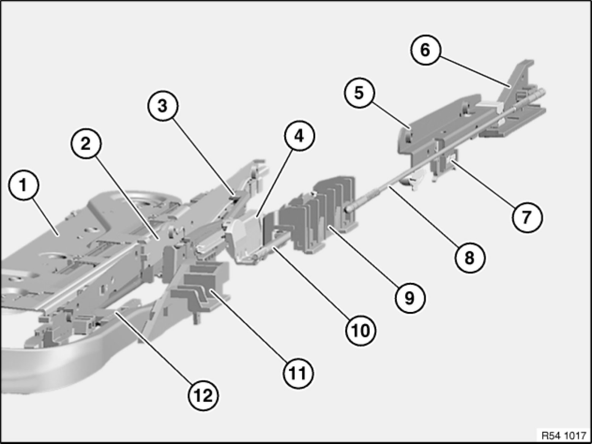
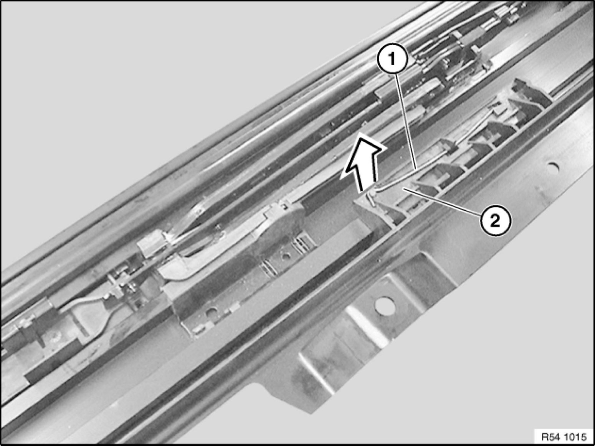

54 10 030 Removing and Installing Mechanism For Rear Glass Lid
54 10 030 - Removing and installing mechanism for rear glass lid

Necessary preliminary tasks:
- Remove complete glass slide/tilt sunroof 54 12 211 Removing and Installing Complete Glass Slide/Tilt Sunroof
- Remove glass slide/tilt sunroof lid at rear 54 10 175 Removing and Installing Rear Glass Slide/Tilt Sunroof Cover
- Remove rear drip moulding 54 13 105 Removing and Installing/Replacing Rear Drip Molding
- Remove drive units with gearing
- Remove rear cross-member 54 13 150 Removing and Installing Rear Cross-Member
- Remove wind deflector 54 13 090 Removing and Installing/Replacing Wind Deflector
Overview of glass lid mechanism:

Components 5, 6, 7, 8, 9 and 11 can be replaced with this repair instruction.


Note:
Always replace mechanism for glass slide/tilt sunroof in pairs.
Remove all faulty parts completely from guide channel.
If necessary, lightly grease guide channel.
Warning!
Wear protective goggles.
Note:
Drip moulding carrier cannot be removed without incurring damage.
Break out tabs with a screwdriver and lever out carrier.
Installation:
Remove all faulty parts completely.
Replace drip moulding carrier and hook into place.
Slide front connecting link (1) towards rear past drive cable plate (2).
If front glass lid is installed, move mechanism with lid.

Lever out retaining bracket (1) from drive cable plate (2).
Remove closing lever from drive cable plate (2).
Slide rear connecting link (2) with drive cable plate (1) towards rear until spring retainer (3) is exposed.
Drive cable plate (1) slides front connecting link as well.
Note:
Spring retainer (3) cannot be removed without incurring damage.
Important!
Risk of damage! Do not bend guide rail when levering the spring retainer out.
Lever out spring retainer (3) with screwdriver.
Installation:
Replace faulty spring retainer (3).
Position spring retainer (3) in rail and press downwards until spring retainer (3) is engaged.
Continue sliding rear connecting link (2) with drive cable plate (1) towards rear out of guide channel and remove in succession.
Installation:
Make sure control carriage (1) for rear glass lid is correctly seated on driver (2) on drive cable.
Installation:
Make sure drive cable plate (1) lid is correctly seated on driver (3) of drive cable.
Slide rear drive cable plate (1) in front of front mechanism forwards.
Then slide front mechanism for glass lid forwards completely.
Install locking lever (2) and lock retaining bracket.
Move rear drive cable plate (1) until closing lever is engaged in guide rail
Rear drive cable plate (1) must be heard and felt to snap into guide rail, as otherwise the guide lugs of the front drive cable plate will break off.
Removing control carriage for wind deflector:
Note:
Spring retainer (2) cannot be removed without incurring damage.
Wear protective goggles for this operation.
Carefully lever pivot for wind deflector out of guide rail.
Lever out spring retainer (2) with screwdriver.
Installation:
Replace faulty spring retainer.
Pull drive cable for floating roofliner out of guide rail.
Pull control carriage (1) for wind deflector towards rear out of rail and remove.
Installation:
Pull front mechanism towards rear completely.
Insert control carriage (1) in guide rail and slide forwards completely.
Install pivot for wind deflector in guide rail. Check that pivot is correctly seated.
Note:
Check smooth and noise-free running of kinematics.
Check function.